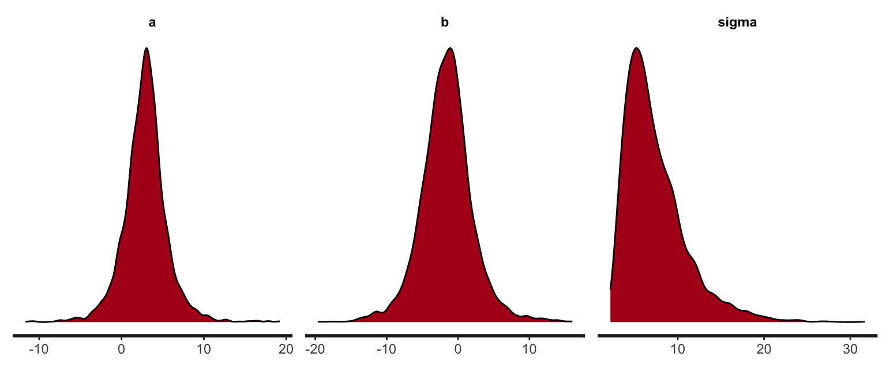

library(cmdstanr)
options(mc.cores = parallel::detectCores()) #Make it faster
m_rcmdstan <- cmdstan_model(file_stan) #Compiling
s_rcmdstan = m_rcmdstan$sample(data = data) #Sampling
df = s_rcmdstan$draws(format = "df") #Extracting Samples as data.frameStan primer
MCMC with Stan / Simple diagnostics
Quick summary
A quick summary of commands (for a more details see below).
Cmdstan
Tidy Bayes
Works with rstan and cmdstanr
library(tidybayes)
spread_draws(s, c(a,b)) #Extracts a and b from s (stan or cmdstan samples)
spread_draws(s, f[i]) #Extracts vector f and calls components iBayes plot
Works with rstan and cmdstanr
s = s_rcmdstan$draws() #We need to call draws() 2023
bayesplot::mcmc_trace(s)Rendering Quarto for exercises
Printing the model in markdown files (only important for rendering exercise sheets), see e.g. around here
{r, echo=lsg, eval=FALSE, code=readLines(“../world.stan”), collapse=TRUE}
Not showing the many details in MCMC simulation with Stan. | ```{r, echo=lsg, eval=lsg, message=FALSE, warning=FALSE, results=“hide”}
Stan Syntax
See https://mc-stan.org/docs/stan-users-guide/index.html
Note that in newer version, we need array[N] int<lower=0, upper=1> y; instead of int<lower=0,upper=1> y[N];, see https://mc-stan.org/docs/reference-manual/removals.html#postfix-brackets-array-syntax
Stan
library(rstan)
options(mc.cores = parallel::detectCores())
rstan_options(javascript=FALSE) #Prevents freezes of RStudio (Jan 2023)
m_rstan = stan_model(model_code = stan_code) #Compiling from string
m_rstan = stan_model(file='mymodel.stan') #Compiling from file
s_rstan = sampling(m_rstan, data=data) #Sampling from file
#No MCMC just evaluating parameters
sampling(model_1, data=dat, algorithm="Fixed_param", chain=1, iter=1) In a more detail
In the following some notes on Stan. You might find the following resources helpful.
Other Cheat Sheets
Data used
Some Data for linear regression
N = 4
x = c(-2.,-0.66666, 0.666, 2.)
y = c(-6.25027354, -2.50213382, -6.07525495, 7.92081243)
data = list(N=N, x=x, y=y)Getting samples from the posterior
There are currently (2023) two interfaces to stan from R. RStan (https://mc-stan.org/users/interfaces/rstan) which is a bit slower and does not use the latest stan compiler and rcmdstan (https://mc-stan.org/cmdstanr/articles/cmdstanr.html).
The technical steps
There are 3 steps:
- Defining the model
- Compiling the model. In this step C code is generated.
- Running the simulation / sampling from the posterior
- Extracting the samples from the posterior
Definition
To define a model, you can add a string or create a .stan file. Another option is to use a Stan markdown chunk and output.var=my_model to the name of the model. Code completion and highlighting is working for files and code chunks.
stan_code = "data{
int<lower=0> N;
vector[N] y;
vector[N] x;
}
parameters{
real a; //Instead of using e.g. half Gaussian
real b;
real<lower=0> sigma;
}
model{
//y ~ normal(mu, sigma);
y ~ normal(a * x + b, sigma);
a ~ normal(3, 10);
b ~ normal(0, 10);
sigma ~ normal(0,10);
}"Compiling
Compiling works with:
Compiling rstan
stan_model(model_code = stan_code)orstan_model(file='mymodel.stan')Compiling cmdstan
cmdstan_model(file_stan)
Compiling with rstan
library(rstan)
m_rstan = stan_model(model_code = stan_code)Compiling with rcmdstan
There is no possibility to use a string for cmd_stan.
m_rcmdstan <- cmdstan_model(stan_file='stan/simple_lr.stan')
m_rcmdstan$print() #Displays the used modelSampling / running the chains
For rstan: sampling(m_rstan, data=data) For cmdstan: mod$sample(data = data_file, seed=123)
s_rcmdstan = m_rcmdstan$sample(data = data) s_rstan = sampling(m_rstan) Diagnostics of the chains
The package bayesplot can handle both interfaces
Trace
#traceplot(s_rstan, 'a')
#bayesplot::mcmc_trace(s_rstan)
bayesplot::mcmc_trace(s_rcmdstan$draws()) #similar result
s_rstan
# Rhat close to one and n_eff lager than half the number of draws; look fineKey Numbers
Rhatis something like the ratio of variation between the chains to withing the chainsn_effnumber of effective samples taking the autocorrelation into account (in cmd_stan the output is ess_bulk and ess_tail)
Shiny Stan
#Shiny Stan, quite overwhelming
library(shinystan)
launch_shinystan(s_rcmdstan)
#If not working
#See https://discourse.mc-stan.org/t/will-launch-shinystan-work-soon-for-cmdstanr/17269
stanfit = rstan::read_stan_csv(s_rcmdstan$output_files())
launch_shinystan(stanfit)Posteriors (of the parameters)
Getting the samples can be done as
Rstan
extract(s_rstan)cmdstan
s_rcmdstan$draws()
Another handy package is tidybayes which can handle the output of rstan and rcmdstan
Tidybayes
library(tidybayes)
head(spread_draws(s_rcmdstan, c(a,b))) #Non-tidy a and b in one row# A tibble: 6 × 5
.chain .iteration .draw a b
<int> <int> <int> <dbl> <dbl>
1 1 1 1 1.99 -1.76
2 1 2 2 3.04 2.89
3 1 3 3 4.95 -3.39
4 1 4 4 0.934 -2.30
5 1 5 5 2.36 0.303
6 1 6 6 5.31 -2.45 head(gather_draws(s_rcmdstan, c(a,b))) #The ggplot like syntax# A tibble: 6 × 5
# Groups: .variable [1]
.chain .iteration .draw .variable .value
<int> <int> <int> <chr> <dbl>
1 1 1 1 a 1.99
2 1 2 2 a 3.04
3 1 3 3 a 4.95
4 1 4 4 a 0.934
5 1 5 5 a 2.36
6 1 6 6 a 5.31 #spread_draws(model_weight_sex, a[sex]) for multilevel modelsCommand Stan Functions
For more see: https://mc-stan.org/cmdstanr/articles/cmdstanr.html
df <- s_rcmdstan$draws(format = "df")
df %>% select(-c(.chain, .iteration, .draw)) %>% cor()Warning: Dropping 'draws_df' class as required metadata was removed. lp__ a b sigma
lp__ 1.0000000 0.12991773 -0.10625738 -0.6907346
a 0.1299177 1.00000000 -0.03857131 -0.1040964
b -0.1062574 -0.03857131 1.00000000 0.1078610
sigma -0.6907346 -0.10409641 0.10786104 1.0000000Stan functions
#plot(samples)
#samples = extract(s_rstan)
stan_dens(s_rstan)
#Note that these are marginals!“Manually” visualize the posterior
We extract samples from the posterior via extract (in some installation the wrong extract function is taken in that case use rstan::extract to use the right one). Visualize the posterior distribution of \(a\) from the samples.
# Extract samples
post = rstan::extract(s_rstan)
T = length(post$a)
hist(post$a,100, freq=F)
lines(density(post$a),col='red') 
Pairs plot
Using the pairs plot, correlations in the variables can be found.
np_cp = bayesplot::nuts_params(s_rstan)
bayesplot::mcmc_pairs(s_rstan, np = np_cp,pars = c("a","b"))Posterior Predictive Plots
Task: Use the samples to create the following posterior predictive plots
Some background first: posterior predictive distribution: \[ p(y|x, D) = \int p(y|x,\theta) p(\theta|D) \; d\theta \] Instead of integration, we sample in two turns
- \(\theta_i \sim p(\theta|D)\)
- \(y_{ix} \sim p(y|x,\theta_i)\) #We do this for many x in practice
Creation of the posterior predictive samples by hand
You can either do this part, or use stan to create the posterior predictive samples \(y_{ix}\) from the samples \(\theta_i\) by hand.
Tip: Create two matrices yix and muix from the posterior samples of \(a,b,\sigma\) with dimension (rows = number of posterior samples and cols = number of x positions).
xs = -10:15 # The x-range 17 values from -1 to 15
M = length(xs)
yix = matrix(nrow=T, ncol = M) #Matrix from samples (number of posterior draws vs number of xs)
muix = matrix(nrow=T, ncol = M) #Matrix from mu (number of posterior draws vs number of xs)
for (i in 1:T){ #Samples from the posterior
a = post$a[i] #Corresponds to samples from theta
b = post$b[i]
sigma = post$sigma[i]
for (j in 1:M){ #Different values of X
mu = a * xs[j] + b
muix[i,j] = a * xs[j] + b
yix[i,j] = rnorm(1, mu, sigma) # Single number drawn
}
}
if (FALSE){
plot(x, y, xlim=c(-10,15), ylim=c(-25,25), ylab='mu=a*x+b')
for (i in 1:100){
lines(xs, muix[i,],lwd=0.25,col='blue')
}
plot(x, y, xlim=c(-10,15), ylim=c(-25,25), ylab='ys')
for (i in 1:100){
points(xs, yix[i,], pch='.',col='red')
}
}After you created the matrices yix and muix you can use the following function to draw the lines for the quantiles.
plot(x, y, xlim=c(-10,15), ylim=c(-25,25), ylab='quantiles (y and mu)')
quant_lines = function(x2, y_pred, col='blue'){
m = apply(y_pred, 2,quantile, probs=c(0.50))
lines(x2, m,col=col)
q05 = apply(y_pred, 2, quantile, probs=c(0.25))
q95 = apply(y_pred, 2, quantile, probs=c(0.75))
lines(x2, q05,col=col)
lines(x2, q95,col=col)
}
quant_lines(xs,yix, col='red')
quant_lines(xs,muix, col='blue')
Creation of the posterior predictive samples with Stan
It’s also possible to draw posterior predictive samples. One can use the generated quantities code block for that.
data{
int<lower=0> N;
vector[N] y;
vector[N] x;
//For the prediced distribution (new)
int<lower=0> N2;
vector[N2] x2;
}
generated quantities {
real Y_predict[N2];
for (i in 1:N2){
Y_predict = normal_rng(a * x2 + b, sigma);
}
} x2 = -10:15
N2 = length(x2)
fit2 = rstan::stan(file = '~/Dropbox/__HTWG/DataAnalytics/_Current/lab/06_03_Bayes_3/Stan_Primer_model_pred.stan',
data=list(N=N,x=x, y=y, N2=N2,x2=x2),iter=10000) d2 = rstan::extract(fit2)
y_pred = d2$Y_predict
dim(y_pred)
plot(x, y, xlim=c(-10,15), ylim=c(-25,25), ylab='quantiles (y and mu)')
quant_lines(x2,y_pred, col='red')Notes on creating excercises
Inclusion of Stan code
In case of cmdrstan the Stan code should be in an extra file to make the workflow easier and reuse compiled models. In case of rstan the Stan code can be included in the Rmd file as:
{r, echo=TRUE, eval=FALSE, code=readLines(“../world.stan”), collapse=TRUE, echo=TRUE}
Attic
RStudio bug 2023
Sometimes R gets slow when rendering with stan code. At least in my case
rstan_options(javascript=FALSE)Not observed anymore (2024)